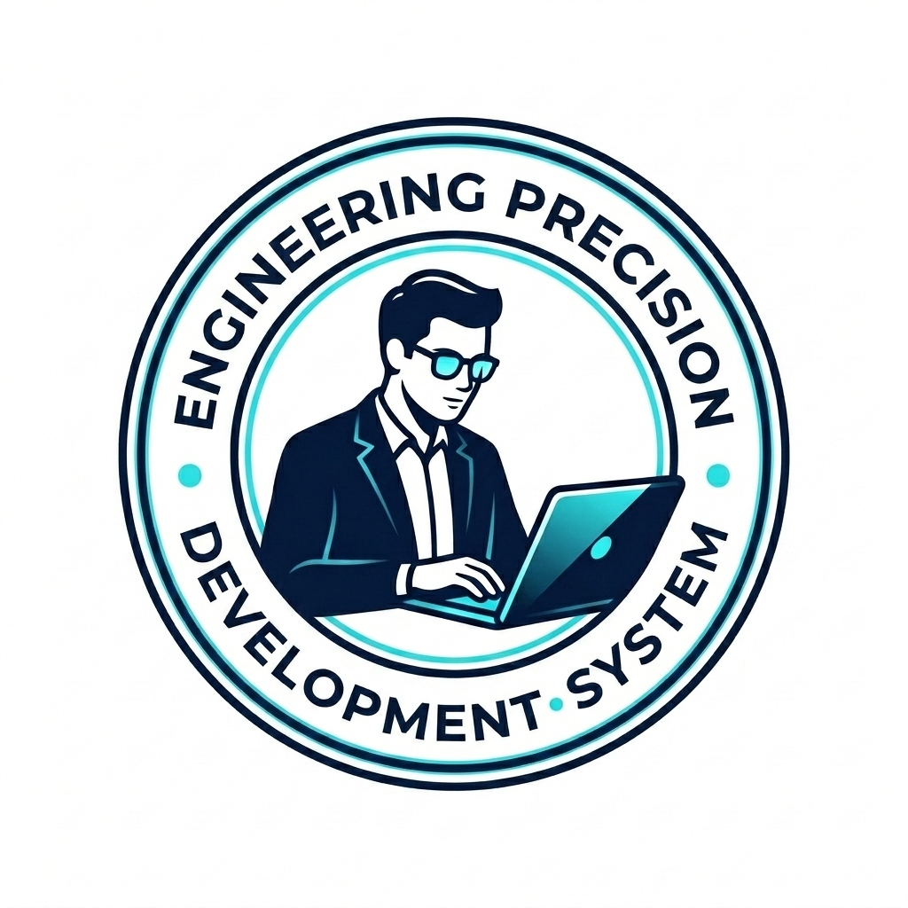

Engineering Precision Through
Systemic Thinking.
Hi I'm Aman, Full-Stack Architect specializing in high-performance websites, web applications amd AI Enabled services. I bridge the gap between complex technical requirements and intuitive user experiences.
Architecting the future through clean code, scalable infrastructure, and a deep understanding of information flows.

"Architecture is not just about building structures, it's about defining how information flows."
Technical Arsenal

Cloud Infrastructure
Designing scalable, resilient systems on AWS and GCP with zero-downtime deployments.
AI & Automation Arsenal
Leveraging cutting-edge AI and automation tools for hyper-efficient development workflows.
System Architecture
Crafting high-performance microservices and event-driven systems using distributed patterns.
Project Leadership
Leading technical teams and delivery cycles with strategic oversight.
Frontend Engineering
Bridging high-end UI design with technical excellence. Specialists in Next.js.
Uptime Metric
Service reliability standards in architectural design and system deployment.